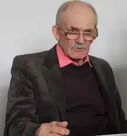

Носань Сергій Лукич народився 1 липня 1939 року на хуторі Дубинка Іркліївського району Полтавської області (з 1954 р. територія Черкащини). Він був ще зовсім малим, коли батько пішов на війну і не повернувся. Усі сімейні турботи лягли на плечі матері.
Перші чотири початкові класи закінчив у своїй Дубинці, восьмирічку — в сусідньому селі Панське, а вже десятирічку довершував у селі Мельники.
Після закінчення школи працював у будівельній бригаді. Наступними віхами життя були служба в армії, робота на переправі (на поромі). 1967 року закінчив Черкаський педагогічний інститут. Працював матросом, учителем, журналістом, викладачем інституту. Товаришував із Григором Тютюнником. Автор оповідань, повістей: "Стежка в зеленому житі" (1976), "Час глибокої осені" (1979), "Високі, високі гори" (1984), "Вогонь, що спалює дотла" (1989), "Пір'їна з крила Жар-птиці" (про народного майстра з Кам'янки Макара Муху), "Осіннє золото" (2004); романів: "Метеори" (1986), "Голгофа любові", "Пласти"; нарисів "Геній правда", "Ой, Дніпро, Дніпро"; поетичних драм "Остання мить" (про лицаря української поезії Василя Симоненка), "Судна ніч" (про Богдана Хмельницького), "Богом даний я народу", "Мазепа"; п'єс про Т. Шевченка "Та не однаково мені…", про Софію Потоцьку, чиїм ім'ям названо парк "Софіївку" в Умані — перлину паркової архітектури світового значення "Моя любове, моя Мадонно", трагікомедій "Монолог" та "Ювілей" та ін. Лауреат обласної літературної премії "Берег надії" імені Василя Симоненка (1994) та літературно-мистецької премії імені Михайла Старицького (2001). Працював редактором Черкаської обласної державної телерадіокомпанії. Пішов з життя 24 лютого 2019 року у м. Черкаси.